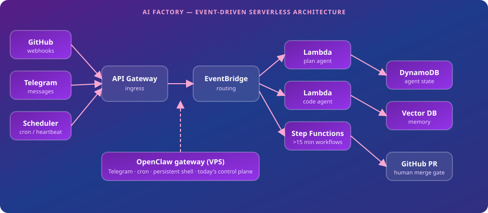

ServerlessDays Milan 2026 · 13 Oct
Building an Autonomous Dev Pipeline with Serverless Agents
Martin Mueller
AWS Community Builder · martinmueller.dev
Core pipeline
Issue → plan → code → test → PR
Side tasks
Email, calendar, contacts, heartbeats
Production
Months live · dozens of issues processed
Stack
OpenClaw + AWS serverless
TODO: real git history screenshot

API Gateway → EventBridge → Lambda → Step Functions
Agent workloads
Issue in → 3 min intense work → idle
VPS alternative
€10/mo fixed, 95% idle
Serverless win
Pay per invocation · scale to zero
Caveat
LLM tokens dwarf infra either way
TODO: anonymized incident examples
~€2–4
AWS infra / month
~95%
LLM token costs
TODO: sanitized bill breakdown chart
Fallback: assets/demo-fallback.png
✓ Do
✗ Don't
Martin Mueller
martinmueller.dev
github.com/mmuller88 · linkedin.com/in/martinmueller88
ServerlessDays Milan 2026